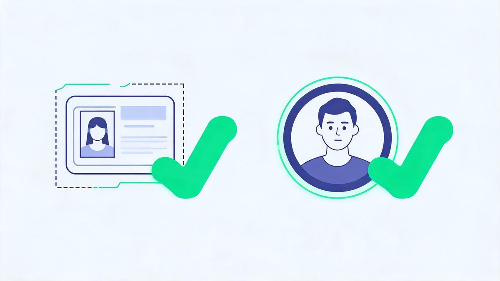
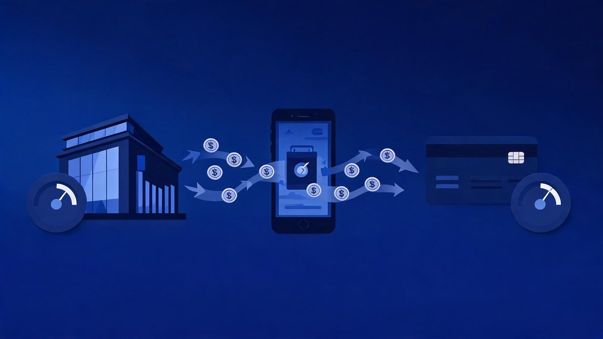
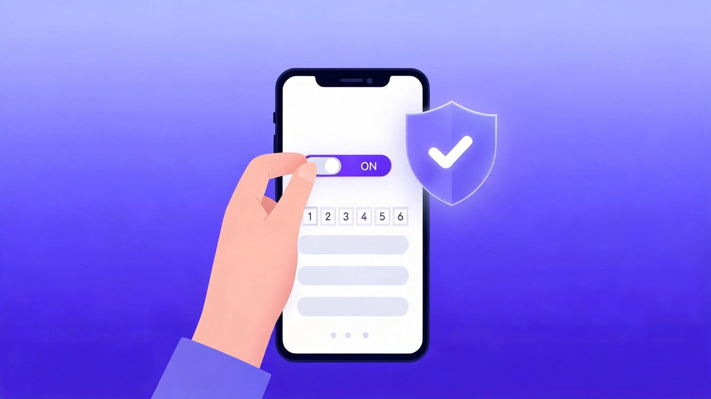
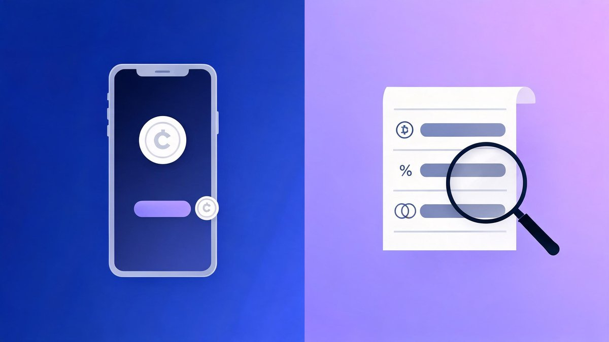

How to set up and verify a crypto exchange account (2026) — a simple, screenshot-ready guide with safety steps many beginners miss. Updated: Sep 21, 2026 · Educational only · Availability varies by country.
🔑 Key Takeaways
- Seven steps: choose an exchange → sign up → KYC verification → add payment method → first deposit → 2FA + allow-listing → $10 test buy
- KYC needs a government ID and usually a live selfie — good lighting and exact address details prevent most rejections
- Bank transfers are the cheapest funding path; cards are fast but pricier
- Enable app-based 2FA and withdrawal allow-listing before your first meaningful deposit — the step most beginners skip
- Finish with a $10 test buy, then compare fees on a maker limit order in the Pro/Advanced view
Step 1: Choose an Exchange (Beginner Shortlist)
Pick a venue that matches your country, budget, and patience level. Our full comparisons live in the cluster, but the shortlist:
- Kraken — safety-first; Pro for lower fees later
- Coinbase — easiest mobile app; Advanced Trade for fees
- Bitstamp — reliable spot; bank transfer friendly
Depth on each: the Top 3 Crypto Exchanges main guide, safety scoring in the safest exchanges checklist, and cost cutting in the low-fee guide.
Step 2: Sign Up
- Download the official app or open the official site (check the URL carefully)
- Create an account with your email and a strong, unique password (use a manager)
- Confirm your email and secure the account immediately
Step 3: KYC Verification
KYC (Know Your Customer) is the identity check regulated exchanges run during onboarding — in industry terms, “the steps exchanges take during onboarding to verify customer identity and perform due diligence” (Trulioo). It typically requires personal details — name, address, date of birth — and a government-issued ID (Regula).

- Complete identity verification with a government ID and a live selfie if asked
- Use well-lit photos; match address details exactly; avoid glare/blur
- Wait for approval (minutes to hours depending on country and documents)
Step 4: Add a Payment Method

- Bank transfer (ACH/SEPA/UPI/etc.) — usually lowest cost; settlement time varies
- Card — fast but higher fees; good for small test buys
Step 5: Make Your First Deposit
- Start small (e.g., $10–$25) to learn the flow
- Check deposit limits, holds and estimated arrival time
- Verify the funding cost before you confirm
Step 6: Enable 2FA + Withdrawal Allow-Listing

- Install an authenticator app (avoid SMS where possible)
- Turn on withdrawal allow-listing and email confirmations
- Save backup codes in your password manager
Full hardening walkthrough: our complete crypto security guide.
Step 7: Make a $10 Test Buy (and Learn to Pay Less)

- Buy a small amount of a liquid coin (BTC/ETH) on the simple screen
- Switch to Advanced/Pro, choose limit, and place a maker order to see lower fees
- Read the receipt; note the fee, spread and total
Why this matters: instant buys commonly cost over 1% plus spread, while maker orders on Pro-style pricing can be a fraction of a percent — the full math is in our low-fee guide.
FAQs
How long does KYC take?
Minutes for automated checks; longer if documents need manual review.
Can I deposit by card only?
Yes, but it’s costlier. Bank transfers are usually cheaper for larger amounts.
What if I fail KYC?
Retry with better lighting or alternative documents; contact support if it persists.
What do I need for crypto KYC verification?
A government-issued ID (passport or national ID), your full personal details matching that ID exactly — name, address, date of birth — and usually a live selfie for liveness checking. Well-lit, glare-free photos prevent most rejections.
Should I fund the account before enabling 2FA?
No. Enable app-based 2FA and withdrawal allow-listing first — it takes under five minutes and the account is protected before it holds meaningful funds. Most account-takeover stories start with a deposit made before security was switched on.
Related Guides
- Top 3 Crypto Exchanges (2026) — Main Guide
- Safest crypto exchange for beginners (2026)
- Low-fee crypto exchanges for beginners (2026)
- What to look for in a beginner exchange (2026) — coming next in this series
The Bottom Line
Setup is a one-hour job done once: pick from the shortlist, verify cleanly with good lighting, fund by bank transfer, and secure before you fund. The $10 test buy is not about the money — it’s about reading your first receipt and seeing the fee difference a maker order makes. From there, the main guide covers the platform choice in depth, the safety checklist hardens your account, and the fee guide keeps more of every deposit yours.
Sources: Trulioo — Understanding KYC Crypto Requirements, Regula — KYC for Crypto guide (May 2026), exchange help centers (Kraken, Coinbase, Bitstamp). Educational only, not financial advice. Availability and features vary by region.